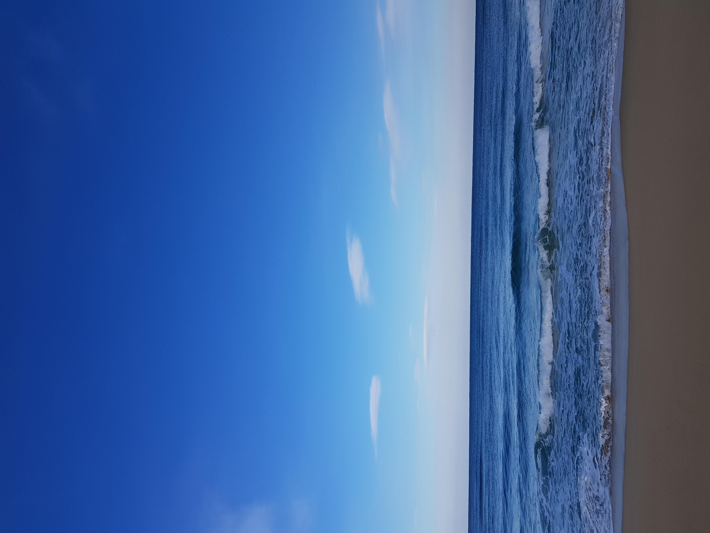
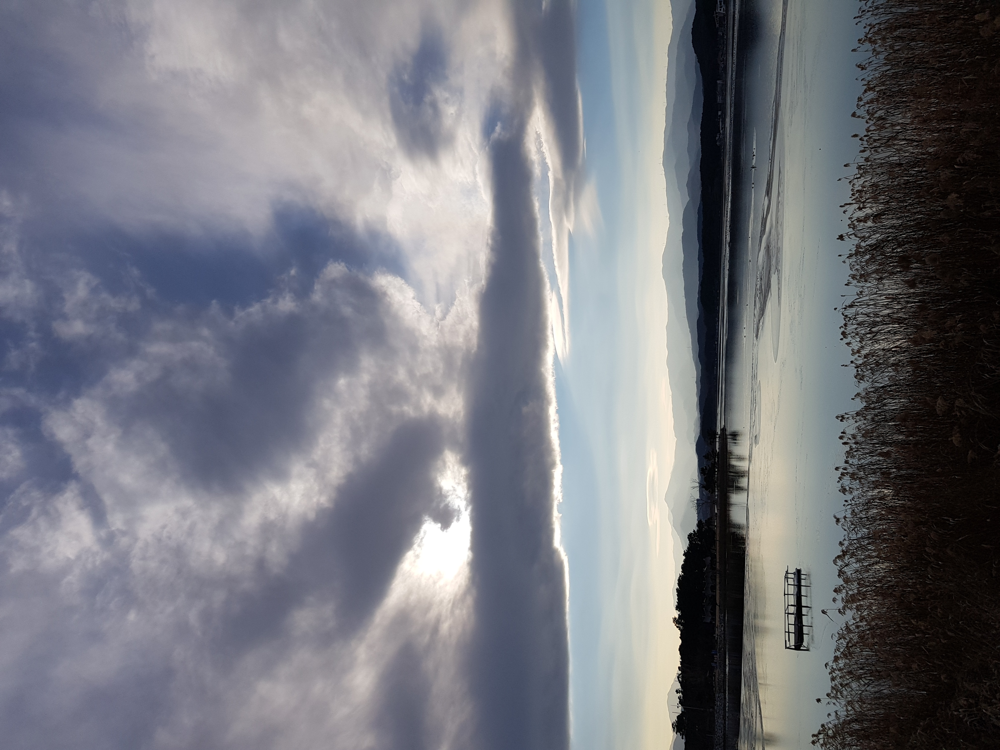

바다

정동진
신라때부터 임금이 사해용왕에게 친히 제사를 지내던 곳으로 2000년 국가지정행사로
밀레니엄 해돋이축전을 성대하게 치른 전국 제일의 해돋이 명소이기도 하다.
바위 사이의 작은 틈새를 돌아 배가 드나들게 되어 있는 작은 항구에서는 어선이 출항하며
항구에서 가까운 거리에 세계에서 바다와 가장 가까운 역으로 기네스북에 올라 있는 정동진역이 있다.

경포해변
강릉시의 중심가에서 북쪽으로 6km, 경포대에서 1km 지점에 있다.
경포호와 바다 사이에 생성되어 있는 모래사장으로, 6km의 백사장이 펼쳐져 있고 주위에 소나무숲이 우거져 있다.
또한 곳곳에 산재하는 해당화는 한층 아름다움을 더한다. 부근에는 경포대와 오죽헌 등 많은 명승고적이 있으며,
피서객이 많이 찾아온다.
안목해면
마을 앞에는 전주에서 떠내려 왔다는 해발 37m의 젠주봉이 있는데,
전설에 의하면 전라도 전주에서 해마다 땅세를 받아갔다고 한다.
어느 한 해에 흉년이 들어 마을사람들이 땅세를 줄 일을 걱정하고 있었는데 어린이의 기지로
이 때부터 땅세를 내지 않았다 한다. 옛날 이곳에 천연 염전이 있었다.